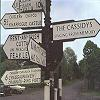

Celtic Lyrics Corner > Artists & Groups > The Cassidys > Singing From Memory > Óró Sé Do Bheatha 'Bhaile
|  | Óró Sé Do Bheatha 'Bhaile |
| Credits : | Traditional; arranged by Na Casaidigh |
| Appears On : | Singing From Memory |
| Language : | Gaeilge (Irish Gaelic) |
| Other Versions : | " Óró, Sé Do Bheatha 'Bhaile " on Norland Wind's album Atlantic Driftwood |
| Lyrics : | English Translation : |
| Curfá : | Chorus : |
| Óró 's é do bheatha 'bhaile | Óró, you are welcome home |
| Óró 's é do bheatha 'bhaile | Óró, you are welcome home |
| Óró 's é do bheatha 'bhaile | Óró, you are welcome home |
| Anois ar theacht an tsamhraidh | Now at the coming of summer |
| 'S é do bheatha, a bhean ba léanmhar | Oh welcome home, my troubled woman |
| B'é ár gcreach tú 'bheith i ngéibhinn | Through your plight we feel great anguish |
| Do dhúthaigh bhreá i seibh méirleach | Your fine lands in enemy hands |
| 'S tú díolta leis na Gallaibh | And betrayed to the English |
| (Curfá) | (Chorus) |
| Tá Gráinne Mhaol ag teacht thar sáile | Gráinne Mhaol coms over the sea |
| Óglaigh armtha léi mar gharda | Well-armed legions there to guard her |
| Gaeil iad féin is ní gaill ná Spáinnigh | No Spanish, English, but Gaels all |
| Is cuirfidh siad ruaig ar Ghallaibh | To rid us of our foe |
| (Curfá) | (Chorus) |
| A bhuí le Rí na bhfeart go bhfeicim | I pray that I will live to see |
| Mura mbheinn beo 'na dhiaidh ach seachtain | Should I live but one week longer |
| Gráinne Mhaol is míle gaiscíoch | Gráinne Mhaol and a thousand warriors |
| Ag fógairt fáin ar Ghallaibh | Wage war on the foreign aggressor |
| (Curfá 3x) | (Chorus 3x) |